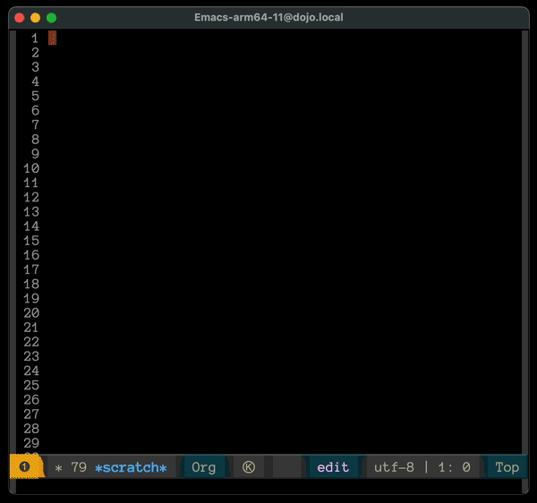

home page ~ code ~ considerations ~ content-unit-tests ~ headers-in-pre-tags ~ element-types ~ elements ~ examples ~ integration-test ~ notes ~ overview ~ rationale ~ specifications ~ usage
Everything here is still an early draft. I'm doing the building in public thing and a bunch of this is still brainstorming. Don't be surprised to find conflicts and inconsistencies and misspellings all over the place. All that stuff will work itself out as progress continues.
Neopolitan Code
Dealing with code blocks is one of the primary reasons I'm making neopolitan.
Still thinking this thru. Here's where I'm at at the moment. (these are scratch notes, so they aren't super organized and may contain contraindications as I think things thru).
Authoring Environment
I've been using Emacs Org Mode. Some of the notes below talk about auto generating results. That's something that would be done with an Org-Mode like source block execution tool (literate programming). That's not required for the format. It's just what would produce the RESULTS text blocks automatically.
The output would be the same regardless of if the RESULTS blocks were made automatically or manually. The end goal is to have a tool in place automatically so I'm writing with that as the environment and a lot of this focuses on that generation.
Another important feature will be syntax and section highlighting. The example below don't have that which makes them more difficult to parse. Syntax highlighting will help that, but the the format is designed to make it as easily as possible to parse even in plain text without highlighting.
Org Mode
Org Mode has been a game changer for me with my notes. It lets you execute blocks of source code directly. Much of the thinking about the code section of this page is with an editor that has a similar functionality but for Neopolitan in mind. That's not required for the language, but it will super charge it.
Once I get the first version of the language my next step will be to create something comparable to the source code execution. (I have no desire to try to replicate all of Org Mode. It's massive.)
If you haven't seen Org Mode in action, this is what it looks:
Top Goal
A single document that includes live source code that can be documented line by line and assembled without duplication and the results output directly into the document
Goals
- Code is executable in the document
- Output from the code goes into the document
- Out of band comments can be added to the code
- Arbitrary lines of code can be output multiple times without duplication
Requirements
- Default behavior is that each source code block renders it's output directly below it like Emacs Org-Mode
--: CODE
--; lang: python
print('Hello, World')
--: RESULTS
Hello, World
- You can add a
--;; lang:directive to identify. the code type. It's optional. If it's not there the output will set the language astxt. - Be default, if there's a language and you run the source code it'll output into a
---: RESULTSsection directory below it - If there are multiple
---: CODEblocks on a page they are all independent unless linked. - It's an implementation detail to determine how running the code works (e.g. if goes through a REPL or whatever...) The part that's part of the spec is that if source blocks are linked, the output will only got behind the last one by default.
- TODO: Dig into jupyter to see how they do stuff. Not trying to duplicate that though. This format isn't only about code. It's content in general, with an 80/20 style foundation of code functionality.
- It's possible to show the output from each block and then a collective output. Something to investigate, but definitely a later phase.
Ideas
The way I work is to build stuff as I go so I can constantly evaluate and re-evaluate how things are working vs making a heavy front end spec. (luxury of being a sole developer). These are some of the ideas on the plate for evaluation.
Assemble Blocks
- Attache multiple code blocks via a directive
--: CODE
--; lang: python
--; set: alfa
print('green')
--: CONTENT
This is where a description would go
--: CODE
--; lang: python
--; set: alfa
print('yellow')
--: RESULTS
--; set: alfa
green
yellow
Reorder Source Blocks
Adding a number to the different source blocks assembles them in that order before executing to build the results block.
--: CODE
--; lang: python
--; set: bravo
--; num: 2
print('purple')
--: CONTENT
some details
--: CODE
--; lang: python
--; set: bravo
--; num: 1
print('blue')
--: RESULTS
--; set: bravo
blue
purple
Reposition Results Block
The --: RESULTS block goes directly after the last --: CODE block in the set be default. It can be reposition anywhere in the document by moving the header and the associated --; set: directive.
--: RESULTS
--; set: charlie
crimson
--: CODE
--; lang: python
--; set: charlie
print('crimson')
This example shows a single CODE block. The same thing would work with multiple code blocks and with or without numbers.
Line By Line Comments
Considering a line by line reference method too. This would work pretty well for smaller code blocks but would get to be a pain with larger ones.
That said, since you can assemble code blocks it feels like it would go pretty far.
The base idea is that there would be a second header designed to associated with the lines associate with. Something like:
--: CODE
--; lang: python
--; set: delta
print('orange')
print('black')
--: RESULTS
--; set: delta
orange
black
--: COMMENT
--; set: delta
--; line: 1
This is a note about line one. It's a
full content block. So you can do
anything here you can with the normal
content blocks.
--: COMMENT
--; set: delta
--; line: 2
This is the comment for line 2 of
the delta block
The results for the code block would show up before the comments by default, but you can move them wherever.
I'm still working on the default output for how the line by line stuff would be associated, but the goal is to make it as flexible as possible. Of course, it's up to the parser if other outputs want to be used.
Also thinking that maybe there are a couple format options for the HTML output that could be flagged by a directive. This is more than just adding an attribute it would spec the specific format of the HTML
Also, because the directives are used, the comments could actually be placed anywhere in the file. (The first phase won't have the ability to include other files, but I wouldn't be surprised to see that evolve)
There are ways to do some automatic movement of the comments if you change line numbers. That's out of scope for the first phase and might not be worth it at all.
--: CODE
--; lang: python
--; set: echo
print('violet')
print('sepia')
print('tan')
--: CONTENT
Full notes go here with a description of
line 2 which renders via this:
--: CODELINES
--; set: echo
--; lines: 2
The text file itself won't display the line. It's only a reference that the parser is responsible for outputting. References can be assembled of ranges of lines with 3-12, and groups of individual lines and ranges like: 1,8-12,24
TBD on the line numbering output. Probably what makes the most sense is to apply a directive to determine what to use. Another possibility would be to send data- attributes that have the same line numbers as the source data as well as the line number as if they were assembled directly, but, the more I think about it the less sure I am about that which means mapping the line numbers feels like it should be the default and the first approach to implement.
You'd also want to be able to add COMMENT blocks to the references. I'll add that too. Maybe something like CODECOMMENT and LINESCOMMENT which gets a little bouncy considering they are both pointed to lines. TBD on that behavior.
Internal Line Numbers
This would be a feature implement by the parser but the format would have to accommodate it. Basically, what would be a good way to have text numbers inside the file itself so you can see them when you're working on them. Maybe a directive would work here:
--: CODE
--; lang: python
--; line-numbers
1| print('pink')
2| print('brown')
--: RESULTS
pink
brown
Something to think about here is when you have multiple source blocks being assembled. Pretty sure you'd want to have the line number cascade down so they didn't always start over at 1. That way, when you run code, if there's an error in a later source block, you'd get line 48 instead of line 1.
The editor would have to be able to deal with this to have any chance of being useful. i.e. this is another case where the spec will define it, but if the tools doesn't make it easy it would ever get used.
I was thinking another option would be to have the line number append to the end of the line. That might make the editor parsing a little easier, but it would still have to be made to do that and if you're adding the functionality it seems like that's half the battle so you might as well finish it and put the line number in front as shown above.